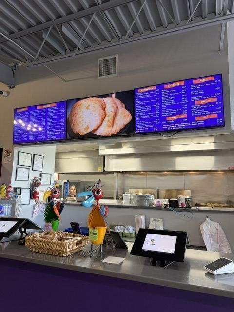

The Closest Brewery to the Albuquerque Airport
FMV Brewing Co. brews on site in Suite G at 2500 Yale Blvd SE, and pours New Mexico wines and spirits alongside coffee they roast themselves. Open Wednesday through Sunday.
The Taproom
Beer, Wine, Spirits and Coffee Under One Roof
FMV — short for Five Mountains View — is a small, veteran-owned Albuquerque brewery built around the idea that the same room should work at 1pm and at 8pm. Craft beer brewed on the premises, a list of New Mexico wines and local spirits, and coffee roasted and brewed in house for the people who aren't drinking.
It's the last stop before the Sunport that isn't an airport bar, and the first one after you land. If your flight's delayed, this is a considerably better waiting room than gate B7.
Finding It
FMV is on the south side of the Yale building, northwest of the traffic light — Suite G. Park in the lot out front and walk around; you'll see the entrance and patio.
Make an evening of it: grab dinner at Perico's Tacos & Burritos in the same building, or something cold from Paletería Cuauhtémoc, then come over for a pint.
Nearby
More to Eat and Drink at Yale
Everything is in the same building at 2500 Yale Blvd SE, minutes from the Albuquerque Sunport.